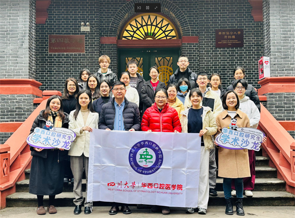

学院通知 · 科研创新
“深耕机制·探索转化”口内系研究生学术沙龙专场活动成功举办
发布时间：2025/12/31
2025年12月25日下午，我院研究生部联合口腔内科学系成功举办了研究生学术沙龙专场活动。本次活动邀请到口腔内科学系的樊怡教授、吴芳龙副教授、刘程程副教授，以及口腔基础医学系的李莹璐研究员担任点评嘉宾，师生围绕口腔医学前沿研究方向展开学术探讨与交流。 黄柳燕博士（导师叶玲教授）系统介绍了多组学联合解析Eed介导HERS命运调控小鼠磨牙牙根发育的机制研究，为深入理解牙根形态发生提供了新视角。李依玲同学（导师程磊教授）分享了CD300ld促进破骨细胞分化调控炎症性骨吸收的机制研究，为相关口腔炎症与骨破坏疾病的靶向治疗提供了潜在分子靶点。牟镜天博士（导师周红梅教授）探讨了巨噬细胞分泌表型在口腔鳞癌进展中的调控作用，为免疫微环境干预口腔鳞癌提供了新思路。张雨薇博士（导师丁一教授）汇报了细胞迁移体在牙龈卟啉单胞菌促进口腔鳞癌转移中的作用机制，为解析细菌—肿瘤相互作用及抑制癌转移提供了实验依据。 嘉宾老师们对本次进行学术汇报的同学进行了充分肯定，鼓励在场同学加强学术交流，也对同学们的汇报内容进行了细致点评与深入指导，现场学术氛围浓厚。本次活动也为我院研究生搭建了高质量的学术交流平台，拓宽科研视野、激发创新思维，进一步推动口腔医学研究的交叉与融合。
